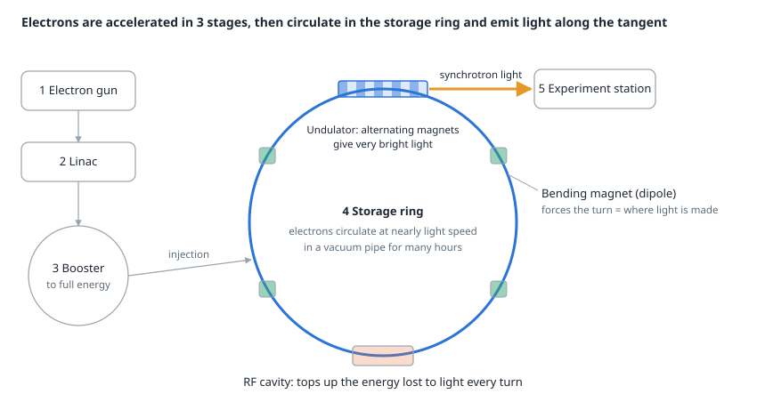
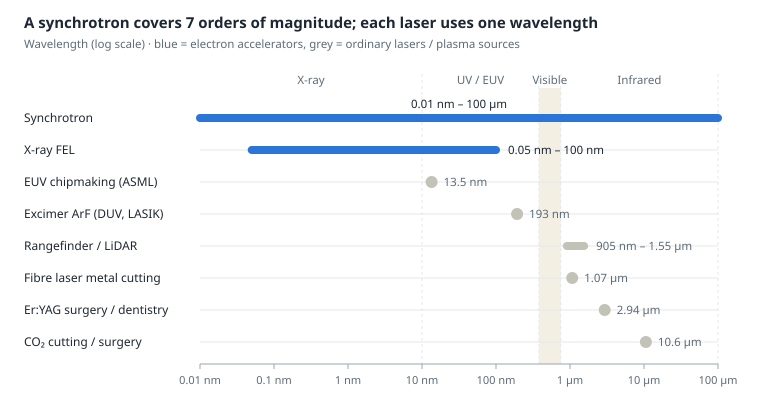
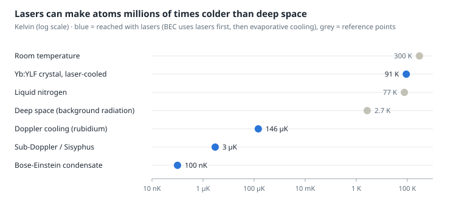

How a synchrotron works, and how it differs from an ordinary laser
In short
A synchrotron accelerates charged particles to nearly the speed of light and uses magnets to steer them around a ring. Every time an electron is bent into a turn, it gives off light along the tangent. This "synchrotron light" is millions of times brighter than a hospital X-ray tube and covers everything from infrared to X-rays.
- CERN's LHC works on the same principle. It is also a synchrotron, but it accelerates protons to collide them. The light is not used; it counts as lost energy.
- It has to be a ring because the particles pass the same accelerating section millions of times, and the beam can be stored for hours.
- The ring has to be big because magnets have a strength limit. The higher the energy, the harder a particle is to bend, and a small ring makes electrons lose too much energy as light.
- It differs from a laser because synchrotron light comes from free electrons being bent, giving a broad spectrum you can tune. A laser comes from stimulated emission in a material, giving one sharp, straight wavelength.
- A common misconception: ASML's EUV machines in chip fabs do not use a synchrotron. They fire a laser at tin droplets to make a plasma. Synchrotrons are used for research, inspection and making tiny parts with LIGA.
The figures in this document are approximate, from general knowledge, and have not been checked against original sources one by one.
How a synchrotron works
At its heart is one law of physics: an accelerated electric charge (including one forced to change direction) emits electromagnetic waves. If the electron is moving close to light speed, that light comes out as a narrow forward beam and can reach X-ray energies.

Principle of a synchrotron light source · not to scale
- Electron gun: heats a cathode until electrons come off.
- Linac (linear accelerator): uses radio-frequency (RF) electric fields to push the electrons along in bunches, faster and faster.
- Booster: a small ring that keeps accelerating them up to the target energy (for example 1.2 GeV at the Synchrotron Light Research Institute in Korat, Thailand).
- Storage ring: has three kinds of magnets. Bending magnets (dipoles) make the turns, quadrupoles and sextupoles focus the beam so it does not spread, and undulators or wigglers flip polarity so the electrons wiggle and give off much more intense light. An RF cavity puts the lost energy back every turn.
- Beamlines and experiment stations: collect the light leaving tangentially from the ring, pass it through a monochromator to pick the wavelength needed, and shine it onto the sample.
The name "synchrotron" comes from the fact that the magnetic field and the RF frequency must be synchronised with the particle energy: as the particles gain energy, the magnets must get stronger to keep the ring radius the same.
Why it runs in a circle, and why the ring is so big
A circle lets you reuse the same accelerator over and over. A linear accelerator gives energy only once per metre of length; for very high energy it has to be kilometres long. Bend it into a ring and the particles pass the same RF cavity millions of times a second, the beam can be stored for hours, and dozens of experiment stations around the ring get light at the same time.
Reason 1: magnets have a ceiling. The bending radius depends on the momentum divided by the magnetic field.
ρ [m] ≈ 3.336 × p [GeV/c] ÷ B [T]
Ordinary electromagnets reach about 1.5 tesla. The LHC's superconducting magnets, cooled to 1.9 K, reach about 8.3 tesla. A 6.8 TeV proton therefore needs a bending radius of about 2.7 km; add straight sections for equipment and the circumference comes to 26.7 km. To reach higher energy without a bigger ring, you need stronger magnets.
Reason 2: the tighter the turn, the more energy is lost as light. The energy an electron loses per turn rises with the fourth power of its energy.
U₀ [keV] ≈ 88.5 × E⁴ [GeV] ÷ ρ [m]
| Example | Energy | Bending radius | Energy lost per turn (approx.) |
|---|---|---|---|
| Electrons, SLRI Korat | 1.2 GeV | ~2.8 m | ~66 keV (0.006%) |
| Electrons, LEP at CERN (closed 2000) | 104.5 GeV | ~3.1 km | ~3.4 GeV (3%) |
| Protons, LHC | 6,800 GeV | ~2.8 km | ~7 keV (almost zero) |
LEP lost 3% of its energy every turn even with a 27 km ring, so it could not push electrons any higher. CERN switched to protons, which are 1,836 times heavier than electrons and radiate roughly ten trillion times less at the same energy. What is "waste" for collider builders is the "product" for light-source builders.
Do CERN's accelerators use the same principle?
Yes. The LHC is the largest synchrotron in the world. Its bending magnets, focusing magnets and RF cavities work the same way. Even the acceleration chain is similar: Linac4 → PS Booster → PS → SPS → LHC, just like gun → linac → booster → storage ring. What differs is the goal and the particle.
| Machine | Particle | Energy | Circumference | What it is for |
|---|---|---|---|---|
| Siam Photon Source (Synchrotron Light Research Institute, Nakhon Ratchasima) | Electrons | 1.2 GeV | ~81 m | Light for research and industry |
| Siam Photon Source II (new project, EEC, Rayong) | Electrons | 3 GeV | ~320 m | Higher-energy X-rays |
| ESRF-EBS (France) | Electrons | 6 GeV | ~844 m | High-brightness X-ray source |
| SPring-8 (Japan) | Electrons | 8 GeV | ~1.4 km | Very high-energy X-rays |
| LEP (CERN, 1989–2000) | Electrons + positrons | up to 104.5 GeV | 26.7 km | Particle collisions (light was a loss) |
| LHC (CERN, in LEP's old tunnel) | Protons | 6.8 TeV per beam | 26.7 km | Collisions to find new particles such as the Higgs boson |
One more key difference: the LHC has two beams running in opposite directions, made to collide at four detectors (ATLAS, CMS, ALICE, LHCb). A synchrotron light source has a single beam that never collides, designed to be as small and steady as possible so the light is sharp.
What it is used for
Synchrotron light is more an "atomic-scale microscope" than a production tool. Most work is looking at the structure and composition of things too small for other instruments to see.
| Field | What it does | Examples |
|---|---|---|
| Medicine: drug design | Finds the 3-D structure of proteins by X-ray diffraction (X-ray crystallography), then designs drugs that fit the active site | HIV protease inhibitors, the structure of the COVID virus |
| Medicine: imaging and therapy (research) | Phase-contrast X-rays show soft tissue more clearly at lower dose; microbeam radiation therapy | Breast imaging at the Elettra synchrotron (Italy), research at ESRF |
| Medicine: particle therapy for cancer | Uses a synchrotron to accelerate protons or carbon ions straight at a tumour (the particles are used, not the light) | HIT Heidelberg, CNAO Italy, HIMAC Japan |
| Chipmaking: EUV research | Tests mirrors, masks and photoresists with precisely tunable 13.5 nm light | PTB laboratory at BESSY II (Germany), ALS (USA) |
| Chipmaking: inspection | 3-D imaging inside chips without cutting them, measuring strain in silicon, checking thin films and atomic-level contamination | 3-D images of processors by X-ray ptychography at PSI (Switzerland) |
| Making tiny parts | LIGA X-ray lithography builds tall structures with perfectly straight walls for MEMS, micro-gears and nozzles | The LIGA beamline at SLRI, Korat |
| Energy and materials | Watching batteries while they charge, catalysts, solar cells | Lithium-ion batteries, hydrogen catalysts |
| Agriculture, food, gems | Seeing nutrients in seeds, checking the origin and colour treatment of gemstones | Work on rice, rubber and gemstones at SLRI, Korat |
| Archaeology and art | Seeing through paint layers without damaging the work | Hidden paintings under Van Gogh's works, ancient scrolls |
Common misconceptions:
- The ASML EUV machines that TSMC, Samsung and Intel use for 3 nm chips make 13.5 nm light by firing a CO₂ laser at molten tin droplets, about 50,000 droplets a second (laser-produced plasma). They do not use a synchrotron, because the source has to fit in one cabinet and a fab runs dozens of machines.
- Some research groups and start-ups (for example at KEK in Japan) are studying free-electron lasers on electron accelerators as a high-power EUV source for a whole fab, but this is still a future idea.
- Radiotherapy in ordinary hospitals uses a room-sized linac, not a synchrotron.
How it differs from other lasers
The difference is the source of the light. A synchrotron uses free electrons bent by magnets, so it produces many colours mixed together, like sunlight but far brighter, and the wanted wavelength is filtered out afterwards. A laser uses electrons bound to atoms dropping between fixed energy levels (stimulated emission), so it gives one colour with waves in phase (coherent) and can be built in a small box.

Approximate values from general knowledge · many lasers also come in versions at other wavelengths
| Synchrotron | X-ray FEL | Rangefinder laser | Cutting laser | Surgical laser | |
|---|---|---|---|---|---|
| Light source | Free electrons bent by magnets | Free electrons in a long undulator; the light amplifies itself | Semiconductor laser diode | Rare-earth-doped fibre, or CO₂ gas | CO₂ gas, Er:YAG / Nd:YAG crystal, excimer gas |
| Wavelength | Very broad, selectable | Tunable with the electron energy | 905 nm or 1550 nm | 1.07 µm (fibre), 10.6 µm (CO₂) | Chosen for the tissue that should absorb it |
| Directionality / coherence | Very directional, only partly coherent | Almost fully coherent (a true laser) | Coherent | Coherent | Coherent |
| Power | Very bright, but only milliwatts to watts per beamline | Femtosecond pulses with extremely high peak power | Milliwatts (eye-safe Class 1) | Thousands of watts continuous | A few watts to tens of watts |
| How it is used | Light passes through or scatters from atoms and reveals structure | Images single molecules and chemical reactions in slow motion | Times the light's round trip (time of flight), halved, × speed of light | Focuses heat until the material melts or vaporises | Water in tissue absorbs the light, cutting and sealing at once; excimer breaks molecular bonds in the cornea |
| Size | A building 80 m to 1.4 km around | A tunnel up to 3.4 km long (European XFEL) | Fits in a phone | A machine cabinet | An operating-room machine |
The X-ray FEL is where the two worlds meet. It uses an electron accelerator like a synchrotron, but sends the beam through a very long undulator, where the emitted light organises the electrons into thin slices that then radiate in phase. The result is an "X-ray laser", something ordinary lasers cannot do because no mirror or gain medium works at those wavelengths.
A nice fact: the 193 nm ArF laser used for LASIK eye surgery is the same type of light source as the DUV lithography machines that print most of the world's chips.
Lasers that cool things down (laser cooling)
Yes, lasers really can cool, and they reach the coldest temperatures known in the universe. Temperature is how fast atoms jiggle or move about at random. If you can "brake" the atoms, they get colder. Light carries momentum, so every time an atom absorbs a photon it gets a gentle push. The lasers used are low-power, milliwatt lasers tuned very precisely, the opposite of a metal-cutting laser of thousands of watts.

Approximate values from general knowledge · numbers depend on the atom and the experiment
How it works (Doppler cooling)
- Tune the laser slightly below the frequency the atom likes to absorb (red-detuned), so an atom at rest hardly absorbs it.
- An atom moving towards the beam sees a higher frequency because of the Doppler effect (like an ambulance siren rising in pitch as it comes towards you). That matches what it absorbs, so it takes in a photon and is pushed against its motion.
- The atom re-emits the photon in a random direction, so the kicks from emission cancel out on average, leaving only the braking force. This repeats tens of thousands of times a second.
- Fire six beams from every direction (up, down, left, right, front, back) and the atoms behave as if stuck in syrup, called optical molasses. Add a gradient magnetic field and the atoms can also be held in the middle of the chamber: a MOT (magneto-optical trap).
This method won the 1997 Nobel Prize in Physics (Steven Chu, Claude Cohen-Tannoudji, William Phillips). Later, laser cooling followed by "evaporating" away the hottest atoms produced the first Bose-Einstein condensate in 1995 (Nobel Prize 2001).
Laser cooling of solids (optical refrigeration) works differently: a crystal doped with ytterbium (Yb) absorbs light at slightly lower energy than the light it fluoresces. The extra energy comes from the crystal's vibrations (anti-Stokes fluorescence), so the light carries heat away. It reaches about 90 K with no moving parts and no vibration.
| Use | Why it needs to be cold | Examples |
|---|---|---|
| Atomic clocks | Nearly still atoms give a sharper frequency signal; the clock drifts less than a second in hundreds of millions of years | Caesium fountain clocks that define standard time, strontium optical clocks; they sit behind GPS time and mobile networks |
| Quantum computers | Cold ions or atoms vibrate little, so qubit states last long and can be controlled precisely | Trapped ions (Quantinuum, IonQ), atoms in optical tweezers (QuEra, Pasqal, Atom Computing) |
| Fundamental physics | Making BECs and studying quantum matter | Laser cooling of antihydrogen at CERN (ALPHA experiment, 2021) |
| High-precision sensors | Cold atoms act as rulers for measuring gravity and rotation | Atom gravimeters for underground surveys, navigation that does not rely on GPS |
| Vibration-free cooling | No compressor or refrigerant | Research on cooling infrared sensors on satellites |
Compared with the synchrotron: both use the interaction between light and particles, but in opposite directions. A synchrotron turns the energy of very fast particles into light, while laser cooling uses light to pull energy out of atoms that are almost at rest.
Simulation and references
Synchrotron control room (Simulation): pick Siam Photon, ESRF, LEP or the LHC, then adjust the energy and magnetic field to see the ring radius needed, the energy lost to light per turn, and how the spectrum shifts compared with each type of laser. Switch the RF cavity off to watch the electrons run out of energy and hit the pipe wall.
All the numbers in this document and in the simulation come from standard formulas and general knowledge and have not been checked against original sources. Places to check before citing them:
- Synchrotron Light Research Institute (Public Organization), slri.or.th: Siam Photon Source and the Siam Photon Source II project
- CERN, home.cern: the LHC, LEP and the accelerator complex
- ESRF, esrf.fr, and SPring-8, spring8.or.jp
- Bending radius and energy-loss formulas: X-ray Data Booklet (Lawrence Berkeley National Laboratory), section on synchrotron radiation
- Laser cooling: the 1997 and 2001 Nobel Prize in Physics materials at nobelprize.org